The feel
Webcore is the look of the amateur home pages of the mid 1990s. The net artist Olia Lialina describes that web as "bright, rich, personal, slow and under construction", made by amateurs before dot-com ambitions, professional authoring tools and usability guidelines washed it away.1 Its pages are guileless and homemade, full of neon and animated GIFs, and they talk to the visitor in a welcoming second person.2
It works because you can see that a real person made the page, not a marketing department or a content management system.3 Jay Tholen, who made Hypnospace Outlaw, compares building a GeoCities or Angelfire site to keeping a scrapbook or doodling in a diary.4 In Digital Folklore, Lialina and Dragan Espenschied call this vernacular, made by users for users, "the most important, beautiful and misunderstood language of new media", even though its glittering star backgrounds and kitten photos are usually dismissed as kitsch.2
- homemade
- sincere
- blinking
- under construction
- copied from a friend
- best viewed at 800 by 600
Where it comes from
In 1994 David Bohnett's Beverly Hills Internet hit on presenting the web as a neighbourhood where you picked an address for your site, and renamed itself GeoCities to match.5 Its free hosting, paid for by banner ads,2 and themed neighbourhoods such as SoHo for artists and Heartland for family and pets gave hundreds of thousands of people their first web page, while Angelfire and Tripod made it just as easy elsewhere.6,7 Yahoo! bought GeoCities in January 1999 and shut it on 26 October 2009, by which time the volunteers of Archive Team had rescued almost a terabyte of its pages.6 In 2016 the Internet Archive pulled every animated GIF out of its own GeoCities archive and made them searchable as GifCities.8
Core elements
Starry, tiled backgrounds
A small image tiles across the whole window, so it fills a screen of any size.6 The classic is the starry night: a black, dark blue or purple tile with light specks, popular with early web makers probably because so many were science fiction and game fans who wanted the web to look like the future.9 Colours look picked at random, like neon green text on a neon yellow background.5
Clip art from free collections
Pages were built from free collections of buttons, bullets, dividers, animations and "Welcome to My Page" headers, and a few images turned up everywhere: rainbow dividers, the "New!" sign and Felix the Cat.10 Every line, button and sound sat in its own file and could be lifted from any page, so building a site and building a collection went together.10
Under construction signs
The road-sign "Under Construction" image began as a warning about broken connections, then turned into a promise that the page would grow, often as "Always Under Construction".11 Archived GeoCities is full of pages promising new material next weekend, and of notes admitting it has been a long time since the last update.6
Personal welcome pages
Many pages exist only to say hello to the world, then pile up holiday photos, a CV, wallpaper collections, recipes and links to "other great cat sites".3 They are written straight to the visitor, in a welcoming second person.2
Hit counters and guestbooks
A guestbook for comments and a counter graphic logging every visit were among the usual hallmarks, as on the Hampster Dance.7 Webrings added a row of three panels linking to sites on the same topic, usually with a proud announcement of membership,12 and "Best viewed with..." buttons showed which browser the author had chosen.10
MIDI music and moving text
Expressive pages played music, usually MIDI files of popular songs, which mostly sound like someone playing hits on an electronic organ at home.13 Text blinked, a feature of early Netscape Navigator, or scrolled past in Internet Explorer's marquee.14
How to do it
Start from the browser's defaults
Begin where a browser leaves you: the default serif, usually Times New Roman, at 16 px.15 Links are underlined #0000EE, turn #FF0000 while clicked and #551A8B once visited.16 Then change things in the order amateurs did: link colours first, then the text's colours and sizes, then the background colour, and finally a background image in its place.17
Tile a background
A starry night can be just two colours and about half a kilobyte: black, dark blue or purple with light specks.9 For a themed border down the left, make a short strip as wide as the screen, 640, 800 or 1024 px depending on the year you are copying.6 Draw the pattern in a tiled drawing mode, a quick way to make patterns,18 or give any image seamless edges so it can tile as a page background.19
Replace HTML elements with GIFs
Replace list bullets with little images and horizontal rules with fancier lines, such as a rainbow, then let some of the images animate.17 Take them from collections of buttons, bullets, dividers, animations and "Welcome to My Page" headers, as most people did, rather than drawing them.10 The Internet Archive has pulled the animated GIFs out of its GeoCities archive and made them searchable.8
Lay it out with tables
Arrange content in table columns and cells and leave the borders showing, as amateurs did, playing with their size, colour and number.17 A bordered table draws its frame outset and each cell inset by 1 px.16 Put the navigation in a left-hand column or a frameset,17 and nudge things into place with blank 1-pixel GIFs stretched to size, as the Space Jam site's designer did.20
Reduce the colours
Convert each image to indexed colour, at most 256 colours as in a classic GIF, or to the 216-colour web-safe palette that Netscape created.21 Try every dithering method and keep the one that works best; positioned dithering suits animations.21 Hypnospace Outlaw reduces its graphics to its own "Hypnospace-safe" palette with Floyd-Steinberg dithering, but favours readability wherever the processing would make things hard to tell apart.22
Add a counter and guestbook
Give the page a counter and a guestbook.7 Join a webring and add its panel: Sage Weil's WebRing let visitors jump to the next or previous site, list the next five, go to a random one or see the whole ring.12 Add "Best viewed with..." browser buttons.10 For badges and banners, the 1996 ad guidelines give 88 by 31 px for a micro button and 468 by 60 px for a full banner.23
Give every page an owner
Give every page an owner. Jay Tholen gave Hypnospace Outlaw's citizens backstories to discover, had them edit their pages and react to the story in a chatroom, and based their pages on AIM profiles and GeoCities sites.4 He kept a design bible for art, audio and writing so that pieces that are jarring on their own still hang together, and invented music genres instead of naming real brands or celebrities.22
Cheat sheet
- Screen
- 640, 800 or 1024 px wide, by year6
- Links
- #0000EE, active #FF0000, visited #551A8B, underlined16
- Colours
- 216 web-safe: a 6 x 6 x 6 cube in 20% steps24
- GIFs
- Up to 256 colours, 1-bit transparency21
- Star tile
- 2 colours, about half a kilobyte9
- Buttons
- 88 x 31 micro button, 468 x 60 banner23
- Tables
- Outset frame, 1 px inset cells16
Do
- Leave the table borders showing, and play with their size, colour and number.17
- Build from collected graphics and share your own: on the vernacular web, distributing mattered as much as creating.10
- Promise more to come. "Always Under Construction" told visitors that someone was looking after the page and that it was worth coming back.11
- Give every page an owner with a backstory, who changes it as your story moves on.4
Avoid
- Stopping at starry wallpaper, under construction signs and animated GIFs. Lialina calls that set the exaggerated version designers reach for whenever they want a 1990s feel.6
- A page designed as one picture and sliced into a table. From around 1997 professional sites did exactly that to set themselves apart from modular amateur pages.10
- Long text straight on a star tile, which only looks good with nothing on it.9 Keep text light on dark or dark on light.21
- Fast blinking or strobing text. Blink hurts readability and can even trigger seizures.14
- Real brands and celebrities, if you want players who weren't there to get the jokes. Hypnospace Outlaw bans them and invents its own.22
Tools and tutorials
- GifCities
The Internet Archive's search engine for the animated GIFs it saved from GeoCities.8 Every little GIF on this page came from it.
- Neocities
Free hosting launched in 2013 to give anyone a place on the web again, with plain HTML and images.25
- Web-safe colours
The 216 colours that Netscape and Internet Explorer shared on 256-colour screens.24
- MDN: the marquee element
The reference for the tag behind this page's scrolling text, attribute by attribute.
- GIMP manual: Indexed mode
Converting to 256 colours or the 216-colour web palette, and which dithering suits animation.21
- Aseprite
Its Tiled Mode, under View, is made for drawing patterns quickly.18
Palette
Sampled from the sites above. Below is the full set of 216 colours that 256-colour screens were sure to show without dithering.24 Click any square to copy it.
Feel the vibe
Listen
George Stone wrote it at Passport Designs in 1990, and it came with Windows for much of the 1990s.26
YouTubeThe rooster's song from the start of Disney's Robin Hood. Sped up, it became the tune on the Hampster Dance page.7
YouTubeFrom Hypnospace Outlaw, set on a 1990s internet that its developer calls a cross between GeoCities and MySpace.22
YouTubeA band from inside Hypnospace Outlaw, where even the music genres are invented.22
YouTubeRobin Hughes wrote the music for Cameron's World, a collage of scraps from archived GeoCities pages. This is one of the versions on its own jukebox.27
YouTubeThe sound of a dial-up connection being made. Try it under a loading screen.
YouTube
More references
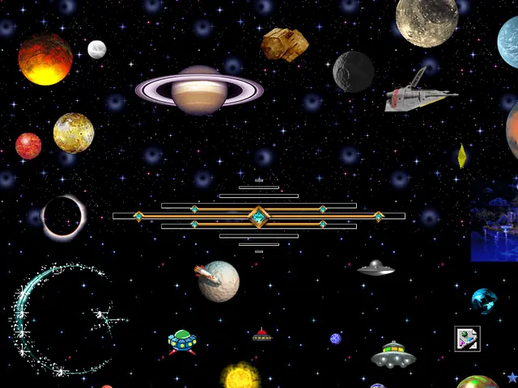
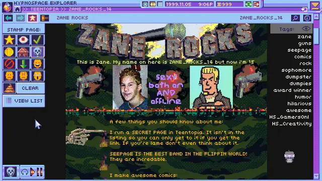
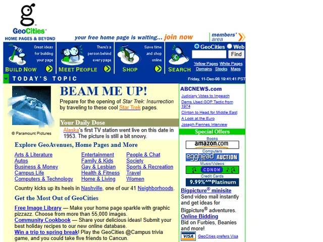
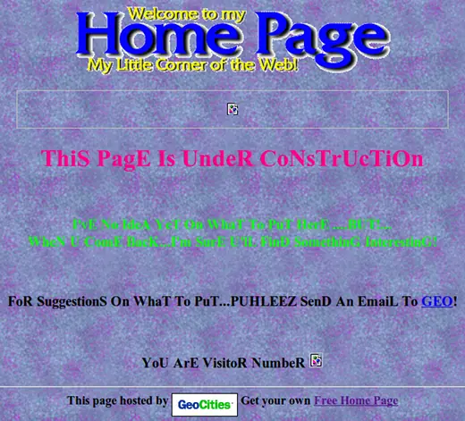
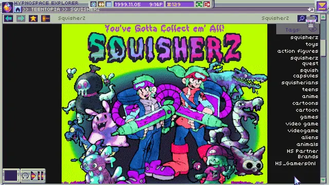
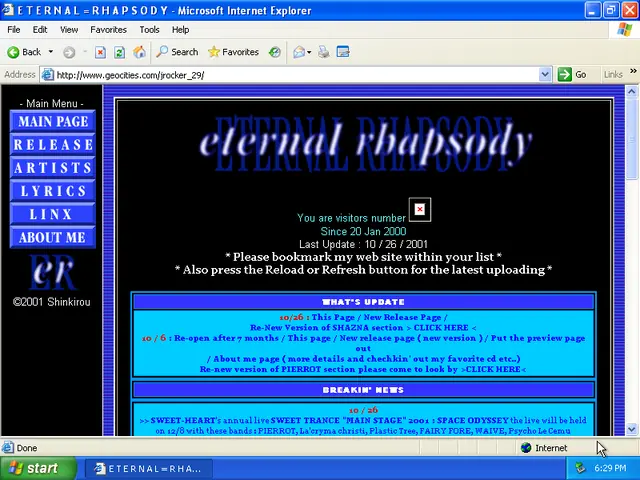
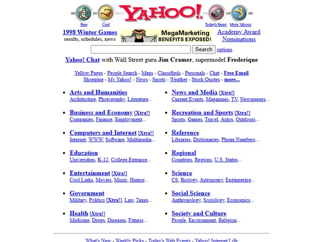
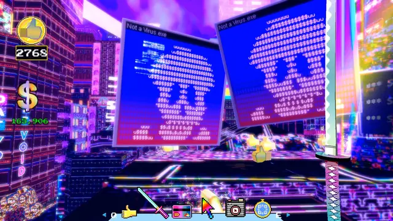
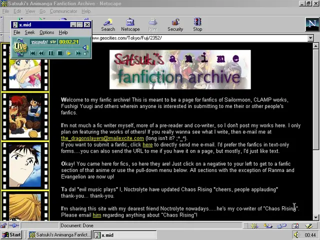
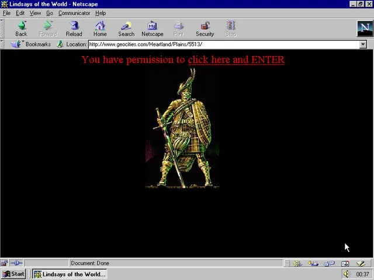
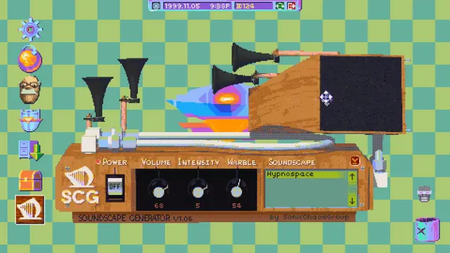
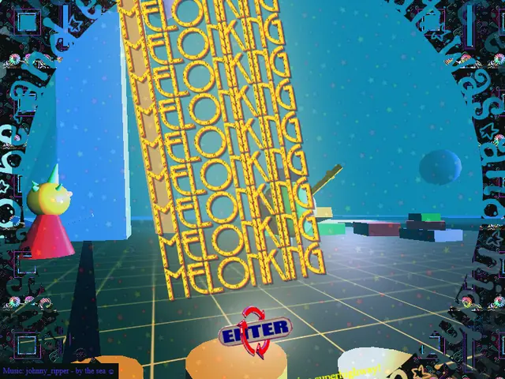
Games
- Neopets
Players dressed up their pets' pages, shops and user lookups in HTML, helped by the site's own step-by-step guide.28
- Kingdom of Loathing
Study how far stick figures and plain web pages can carry a whole game.
- Broken Reality
Compare its walk-through 3D take with Hypnospace Outlaw's flat pages.
- Hypnospace Outlaw
You moderate an invented 1990s internet. Study its citizen pages, which mix AIM profiles with GeoCities sites and each belong to someone.22,4
Film, art and more
- GeoCities
The free host where much of this lived, split into themed neighbourhoods such as SoHo for artists and Heartland for family and pets.6
- Space Jam (1996 website)
Warner Bros.' film site, whose designer stretched blank 1-pixel GIFs to place things. Still one of the most faithful survivors of early web design.20
- The Hampster Dance
Deidre LaCarte's GeoCities page: 392 dancing hamster GIFs, a sped-up .wav, a counter and a guestbook.7
- One Terabyte of Kilobyte Age
Olia Lialina and Dragan Espenschied's screenshots of rescued GeoCities pages, rebuilt in period browsers.2
- Cameron's World
Cameron Askin's web collage of text and images from archived GeoCities pages, a tribute to unrefined self-expression.27
Sources
- 1A Vernacular Web
- 2One Terabyte of Kilobyte Age
- 3A Vernacular Web: Welcome to my Home Page
- 4Hypnospace Outlaw's Developer Talks Policing The Internet, One Gif At A Time
- 5The Lost Cities of Geo
- 6Still There: Ruins and Templates of Geocities
- 7The oral history of the Hampsterdance: The twisted true story of one of the world's first memes
- 8GifCities: The GeoCities Animated GIF Search Engine
- 9A Vernacular Web: The Starry Night Background
- 10A Vernacular Web: Free Collections of Web Elements
- 11A Vernacular Web: Under Construction
- 12Web rings: An alternative to search engines
- 13A Vernacular Web: MIDI
- 14blink element (<blink> tag)
- 15Fundamental text and font styling
- 16HTML Standard: Rendering
- 17Prof. Dr. Style: Top 10 Web Design Styles of 1993 (Vernacular Web 3)
- 18Tiled Mode
- 19Tile Seamless
- 20'Space Jam' Forever: The Website That Wouldn't Die
- 21Indexed mode
- 22Road to the IGF: Tholen, Lasch, Nelson Jr., and Cochran's Hypnospace Outlaw
- 23At Last, Some Ad Banner Size Guidance
- 24Is the Web-safe palette still valid?
- 25NeoCities Is Recreating the Garish, Web 1.0 Creativity of Geocities
- 26This Gloriously Cheesy MIDI File Was Windows' Greatest Hit
- 27Cameron's World
- 28The Neopets HTML Guide